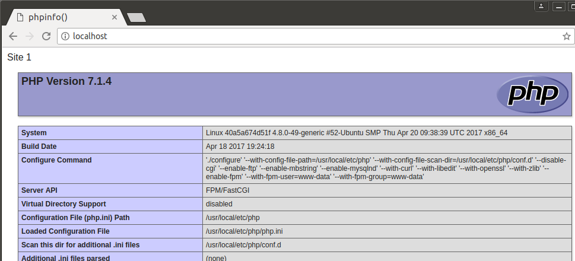

Docker deploying Nginx MySQL PHP7/PHP5.6/PHP5.4 in one key, support full feature functions.
git, docker and docker-compose;$ git clone https://github.com/yeszao/dnmp.gitdocker：
$ sudo gpasswd -a ${USER} docker$ cd dnmp
$ cp env.sample .env
$ cp docker-compose.sample.yml docker-compose.yml
$ docker-compose uphttp://localhost, you will see:
The index file is located at ./www/localhost/index.php.
Default, we create 3 php container, they are PHP7, PHP5.6 and PHP5.4,
We can change easy by modify Nginx configuration fastcgi_pass.
For example, http://localhost use PHP7, Nginx fastcgi_pass is:
fastcgi_pass php:9000;
To use PHP7, change it:
fastcgi_pass php54:9000;
Then reload nginx:
bash
$ docker exec -it nginx nginx -s reload
Done.
We will always use composer in host.
On host, Create a folder for saving composer config file and cache:
mkdir ~/dnmp/composer
Open ~/.bashrc, add:
composer () {
tty=
tty -s && tty=--tty
docker run \
$tty \
--interactive \
--rm \
--user $(id -u):$(id -g) \
--volume ~/dnmp/composer:/tmp \
--volume /etc/passwd:/etc/passwd:ro \
--volume /etc/group:/etc/group:ro \
--volume $(pwd):/app \
composer "$@"
}
Make this script affect:
source ~/.bashrc
Thats all, use composer:
cd ~/dnmp/www/
composer create-project yeszao/fastphp project --no-dev
MIT